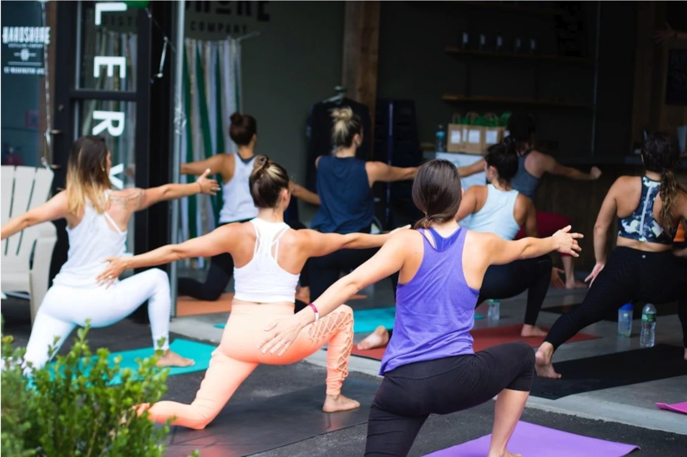
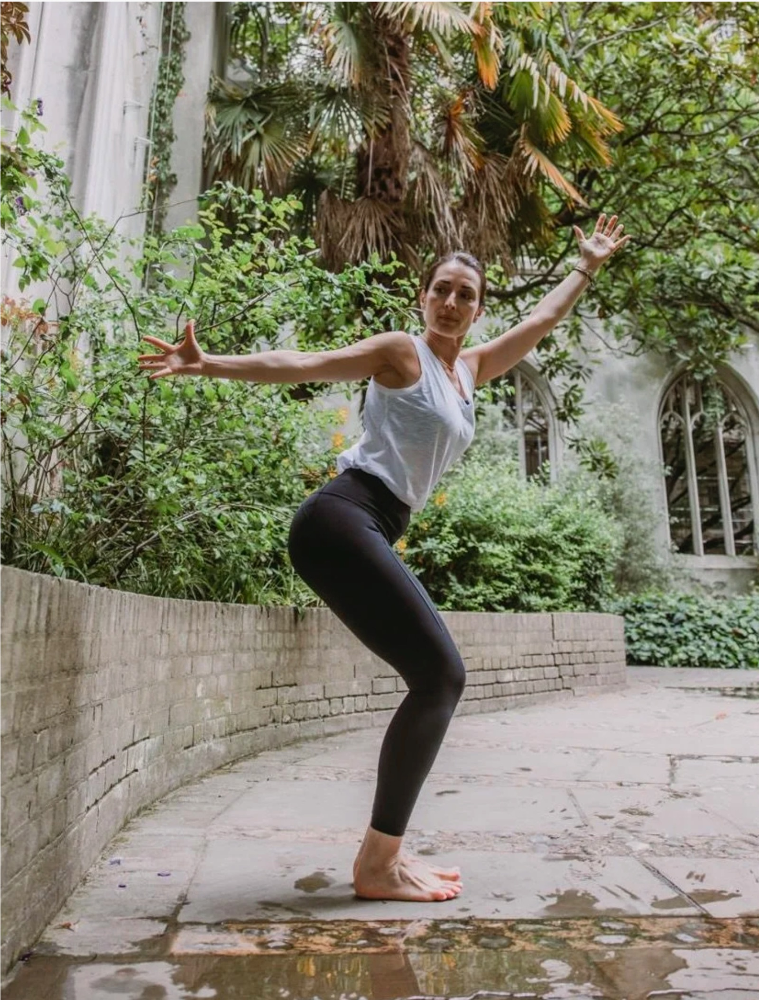
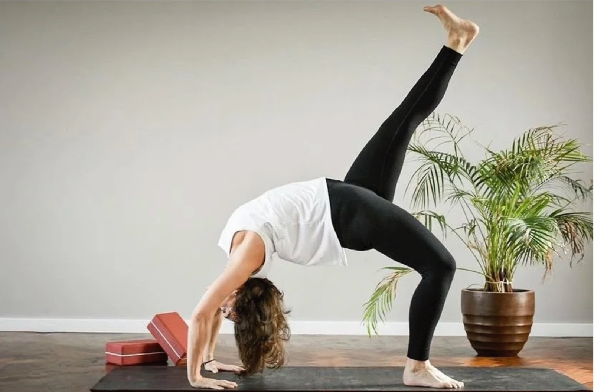
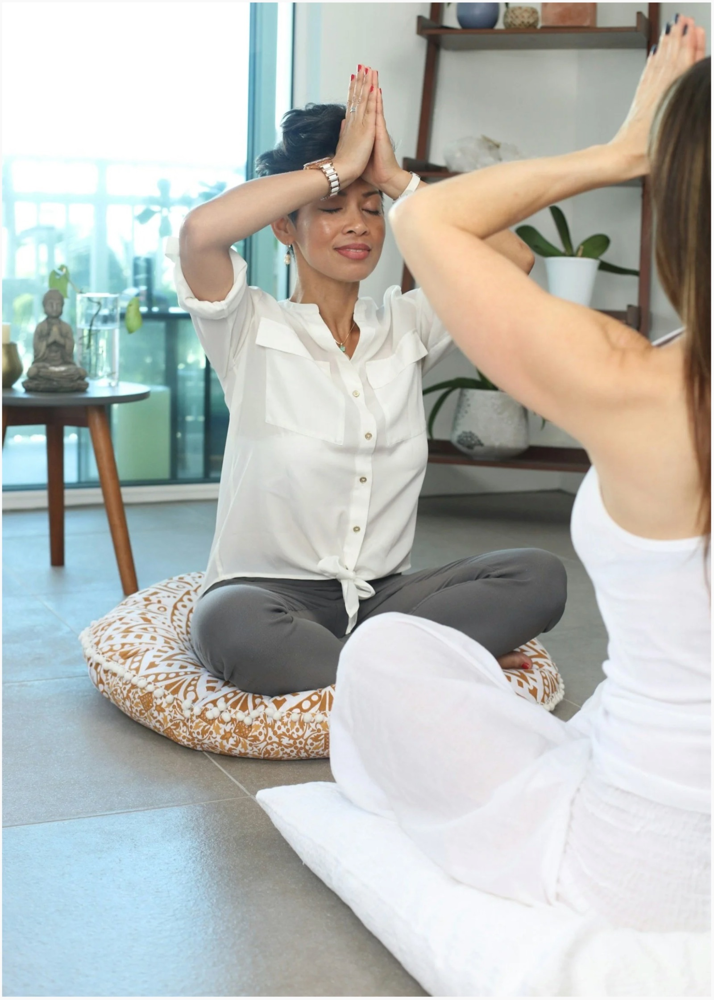
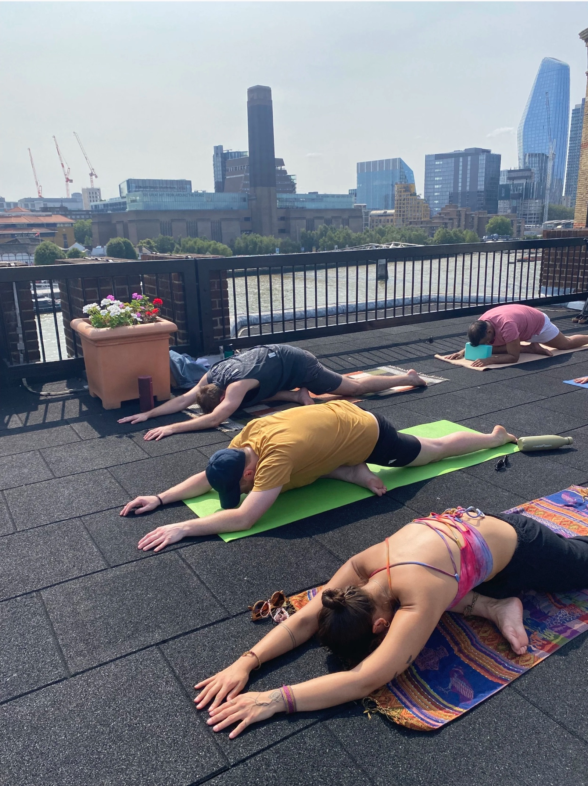
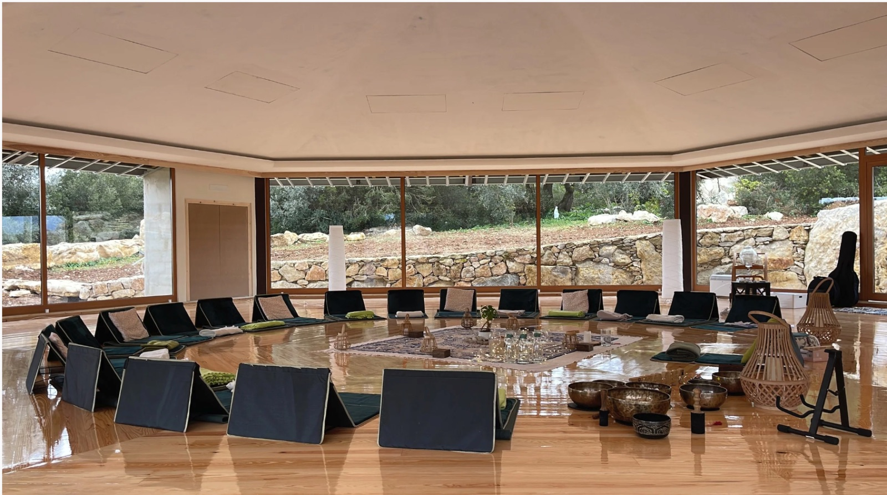
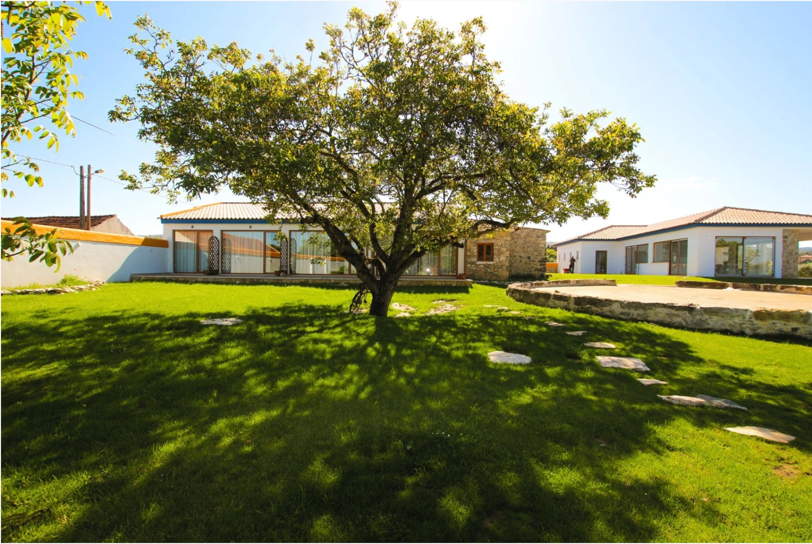

Yang & Yin
Weekly · Sundays · 5:00 to 6:30pm
A dynamic Vinyasa flow building heat and strength, transitioning into restorative Yin to soothe the nervous system.
Book a class →Hybrid Yang & Yin and Yogasana, practised in person across West London or live-streamed to your most comfortable space. Weekly classes on Sunday and Tuesday evenings.

Weekly schedule
All levels · hybrid, in person and online · donation based

A dynamic Vinyasa flow building heat and strength, transitioning into restorative Yin to soothe the nervous system.
Book a class →
Meditation and mantra into a dynamic Yogasana flow, core strength, alignment and functional flexibility.
Book a class →
A practice tailored specifically to your needs, on your own or with friends and family, in private. Pricing on request.
Enquire →
Tailored wellness programmes for teams, reducing burnout and reclaiming focus, built around your schedule.
Enquire →"If you can control the rising of the mind into ripples, you will experience yoga."
We are training the mind to find stillness. Join me every weekday morning to find that inner quiet before the world gets noisy, a gentle way to begin again, each day.
Join a session
The breath is the link between your mind and your body, the seen and the unseen.Yoga is more than asanas

Our one retreat of the year, a four-day immersion of Vinyasa Krama, Yin and Yoga Nidra, meditation at sunrise, and hiking the cliffs of Nazaré.
Reserve your placeAn instructor dedicated to a practice that is both grounded and transformative, rooted in the foundations of the yoga tradition.
I create a space where you can cultivate strength, clarity and balance, not just on the mat, but in all areas of your daily life.
About & testimonials →Based in Chiswick (W4), I teach in person across West London and the surrounding boroughs, in studios, your home, or a venue of your choosing, and live online wherever you are. Private and group sessions are usually within about 7 miles of W4 1LB.
I'm based in Chiswick, W4, and teach in person across West London, including Acton, Ealing, Hammersmith, Shepherd's Bush, Brentford, Kew, Richmond, Barnes, Putney, Fulham, Kensington and Notting Hill, typically within around 7 miles of W4 1LB. If you're a little further out, just ask. Online classes are open to everyone, anywhere.
Absolutely. Every class is suitable for all levels and you don't need to be flexible to start, yoga is what builds flexibility. You'll get clear, kind guidance whether you join in person or online.
Yes. Every class runs on a hybrid model, join in person across West London and the City, or via high-quality live stream from your most comfortable spot at home, anywhere in the world.
A short, live 20-minute meditation every weekday morning at 7:15am UK, training the mind to find stillness before the day begins. Donation-based: give what you feel, whenever you feel. Get in touch to join →
Yes. Private yoga sessions are available upon request, one to one or for small groups of friends and family, in person at your home or a venue of your choosing. Whether you are a beginner seeking foundational guidance, working through a specific injury, or deepening an established practice, sessions are tailored to your goals. Reach out via the contact form to discuss your availability and we will create a customised programme. See private sessions →
I do. Bespoke corporate wellness programmes are tailored to your team's size, schedule and goals, on-site, virtual or hybrid. Start with a complimentary 15-minute discovery call. See corporate yoga →
Transport to and from Lisbon airport, eco-luxury accommodation, all meals and snacks, yoga props, and daily practice, meditation, dynamic Yogasana, Vinyasa Krama, Yin and Yoga Nidra, plus free time to hike and explore Nazaré. Flights to Lisbon are not included. Retreat details →